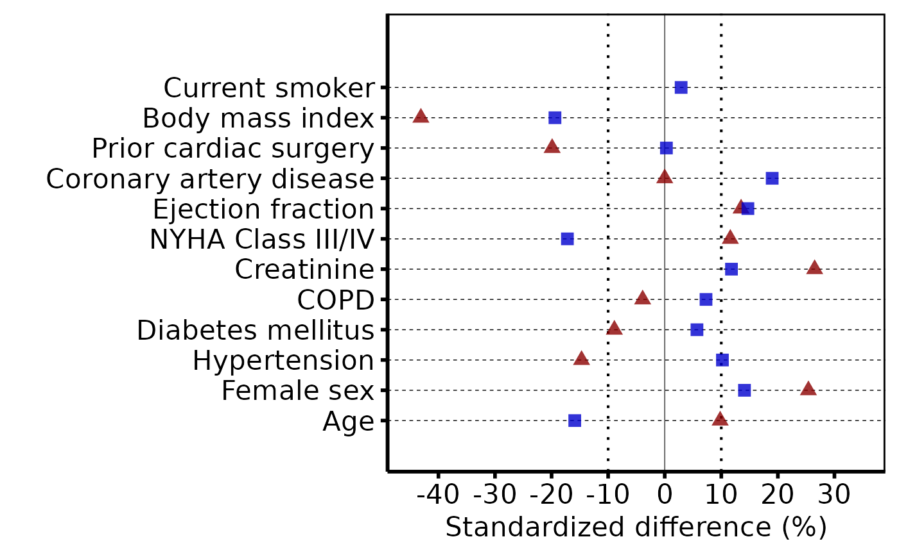
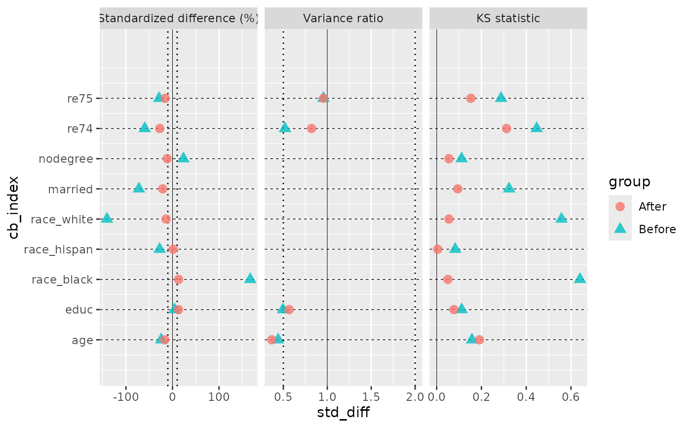

Validates and orders a long-format standardized-mean-difference data frame
for a covariate balance plot, and returns an hv_balance object.
Call plot.hv_balance on the result to obtain a bare
ggplot2 object that you can decorate with color, shape, axis scales,
and theme_hv_manuscript.
Arguments
- data
A data frame in long format with one row per covariate \(\times\) group combination. Wide-format data must be reshaped first (e.g. with
tidyr::pivot_longer()). It may instead be acobalt::bal.tab()result (built withun = TRUEto draw the Before group), an hvtiRpropensityps_*object, or a list of those, one per imputation; see Details.- variable_col
Name of the column containing covariate labels. Default
"variable".- group_col
Name of the column identifying the comparison group (e.g.
"Before match"/"After match"). Default"group".- std_diff_col
Name of the numeric column holding standardized mean difference values. Default
"std_diff".- var_levels
Character vector controlling the display order of covariates on the y-axis. The first element appears at the bottom. Defaults to the order of first appearance in
data[[variable_col]].- threshold
Numeric; absolute SMD value at which dotted reference lines are drawn (\(\pm\)
threshold). Default10.- stat_col
Optional name of a column holding the statistic each row reports:
"smd","variance_ratio"or"ks". WhenNULL(default) every row is treated as"smd".- pair_col
Optional name of a column identifying the comparison (e.g.
"B vs. A") when more than two groups were compared. DefaultNULL(a single comparison).- stats
Character vector of statistics to keep, in panel order; any of
"smd","variance_ratio","ks". Default"smd". An error is raised if a requested statistic has no rows.- vr_threshold
One or two positive numbers; reference lines for the variance-ratio panel. Default
c(0.5, 2).- ks_threshold
NULL(no line, default) or a single number in \([0,1]\); reference line for the KS panel.- group_labels
Length-2 character vector naming the before and after groups. Default
c("Before", "After").
Value
An object of class c("hv_balance", "hv_data"): a list
with three elements:
$dataThe input data frame with a
cb_indexcolumn added for y-axis positioning, astatfactor (levels =stats) and apaircolumn (NAwhen there are no comparisons, otherwise a factor in order of first appearance). Ifdataalready has its ownstatorpaircolumn it is left untouched and these values go in.cb_stat/.cb_pair.$metaNamed list:
variable_col,group_col,std_diff_col,var_levels,threshold,n_vars,n_groups,stats,pairs,stat_varandpair_var(the names of the columns holding the statistic and the comparison),n_imputations,vr_threshold,ks_threshold,suggested_height.$tablesEmpty list (no accessory tables).
Details
Instead of a long data frame, data may be a cobalt::bal.tab()
result, a multi-category bal.tab (one facet row per pair), an
hvtiRpropensity ps_match() / ps_weight() object, or a list of
any one of those, one per imputation. In those cases the SMD is multiplied
by 100 and the *_col arguments are ignored.
A bal.tab() result must be built with binary = "std" and
continuous = "std" (the default), so every difference is
standardized, and with un = TRUE to draw the Before group: cobalt
leaves the unadjusted columns empty otherwise, and hv_balance() then
says so in a message and draws the After group only. Ask for the variance
ratio and KS statistic with stats = c("m", "v", "ks"); the variance
ratio is undefined for binary covariates, so those rows are left out of its
panel. A distance or prop.score row (Type "Distance") is drawn
as a covariate row, as in cobalt::love.plot(). ps_* objects
carry standardized differences only.
A list is pooled across imputations: SMD and KS statistic are averaged,
the variance ratio takes the geometric mean, and an NA in any
imputation makes the pooled value NA (counted in
$meta$n_missing). Every imputation must have the same rows, with
one allowance: a covariate cobalt types as binary in some imputations
(because it takes two values there) has no variance ratio in those, so its
pooled variance ratio is NA.
See also
Worked recipe with rendered output: https://ehrlinger.github.io/hvtiGraphics/balance.html.
Examples
library(ggplot2)
dta <- sample_covariate_balance_data()
# 1. Build data object
cb <- hv_balance(dta)
cb # prints variable count, group count, threshold
#> <hv_balance>
#> Variables : 12
#> Groups : 2 (Before match, After match)
#> Value col : std_diff
#> Threshold : ±10
#> Stats : smd
#> Height : 3.5 in at 12 pt (see hv_balance_height())
# 2. Bare plot -- undecorated ggplot returned by plot.hv_balance
p <- plot(cb)
# 3. Decorate: color/shape palettes, x-axis range, labels, theme
p +
scale_color_manual(
values = c("Before match" = "red4", "After match" = "blue3"),
name = NULL
) +
scale_shape_manual(
values = c("Before match" = 17L, "After match" = 15L),
name = NULL
) +
scale_x_continuous(limits = c(-45, 35), breaks = seq(-40, 30, 10)) +
labs(x = "Standardized difference (%)", y = "") +
theme_hv_poster()
#> Warning: Removed 1 row containing missing values or values outside the scale range
#> (`geom_point()`).

# 4. From a cobalt::bal.tab() result: SMD, variance ratio and KS panels
if (requireNamespace("cobalt", quietly = TRUE)) {
lal <- cobalt::lalonde
ps <- fitted(glm(treat ~ age + educ + race + married + nodegree + re74 + re75,
data = lal, family = binomial()))
bt <- cobalt::bal.tab(
treat ~ age + educ + race + married + nodegree + re74 + re75,
data = lal, weights = ifelse(lal$treat == 1, 1 / ps, 1 / (1 - ps)),
binary = "std", s.d.denom = "pooled", stats = c("m", "v", "ks"), un = TRUE
)
plot(hv_balance(bt, stats = c("smd", "variance_ratio", "ks")))
}
